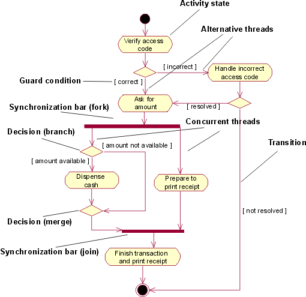

|
Поток событий варианта использования описывает, что необходимо сделать системе, чтобы предоставить значение субъекту.
Он состоит из последовательности задач, в результате выполнения которых субъект получает результат. Поток событий
состоит из основного потока и одного или нескольких альтернативных потоков.
Поток событий варианта использования можно описать графически с помощью диаграммы деятельности. На этой диаграмме
показаны:
-
Состояния деятельности, представляющие производительность задачи или этапа в потоке событий.
-
Переходы, указывающие, в какой
последовательности идут состояния деятельности. Этот тип перехода иногда называют переходом после выполнения,
поскольку он отличается от обычного перехода тем, что не требует явного события триггера; он активизируется по
окончании выполнения задачи, которую представляет состояние деятельности.
-
Решения, для которых определен набор
сторожевых условий. Эти сторожевые условия определяют, какой переход (или набор альтернативных переходов)
будет выбран после выполнения задачи. Решения и сторожевые условия позволяют просматривать альтернативные
нити в потоке событий варианта использования.
-
Панели синхронизации, с помощью которых можно просматривать параллельные субпотоки. Панели синхронизации
позволяют просматривать параллельные нити в потоке событий варианта использования.

Упрощенная диаграмма деятельности для варианта использования Снять деньги с карточки в модели варианта использования
для банкомата.
Диаграмма деятельности - это особая разновидность диаграммы состояний, на которой все или большинство состояний
являются состояниями деятельности и все или большинство переходов активизируются по окончании выполнения действий в
исходных состояниях.
|